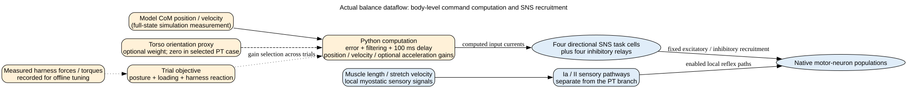
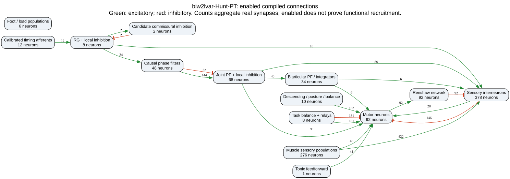
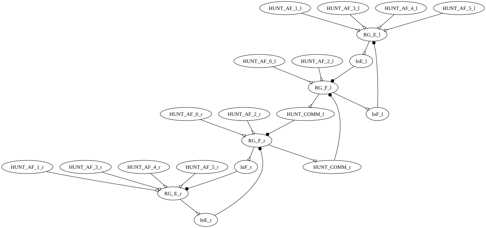
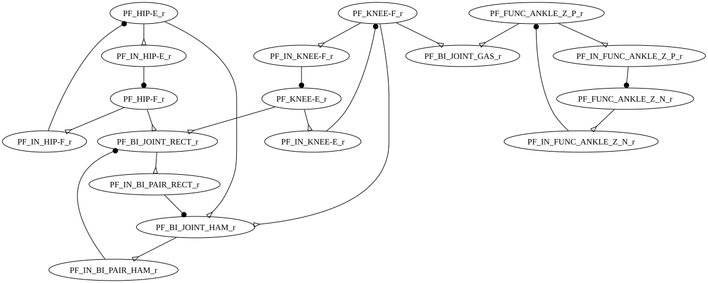
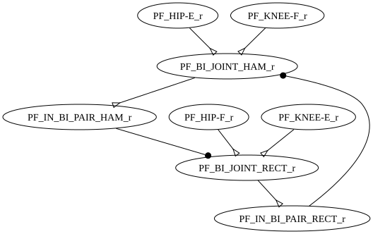
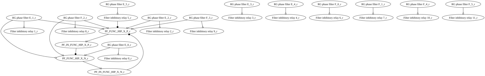

other biarticular

Dynamically fitted four-cell candidate. Assisted standing passes; the completed alternating ground-step tests fail. Training results and limits.

Recorded grounded diagnostic from the single-cadence fit
These diagrams come from compiled conductances, not literature expectations. A candidate commissural pathway is built. Ia reciprocal inhibition is enabled in this candidate. IIX/IIIN/Renshaw outputs to MNs remain disabled. The raw export retains disabled edges; the editor export contains enabled edges only. Walking-expression gating at this recorded pose is not proof of walking.
1035 neurons · 424 inputs. Overview: green excites, red inhibits. Detailed panels use the SNS-Toolbox renderer and omit boundary edges for readability.
Timing afferents 0–5: hip-flexor II, hip-extensor II, hip-flexor Ia, hip-extensor Ia, ankle-extensor Ib, and knee-extensor Ib. HUNT_BANK cells are causal phase filters, not extra biological oscillators. Joint PF pairs retain inhibitory relays. RF and HAM form one four-cell module per leg: two integrating PF cells and two reciprocal inhibitory relays. GAS remains a single integrator. Sartorius, gracilis, and TFL retain separate paired engineering modules.
The added time-filter cells are engineering features, not neurons specified by Hunt. The PT input computation is a body-level controller outside SNS; it is separate from local muscle-stretch feedback. Read the clarification and measured muscle functions.






Import JSON for your connectome editor · Full compiled edge data, including disabled connections